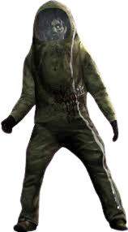
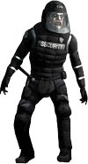
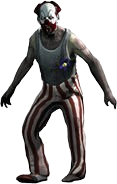
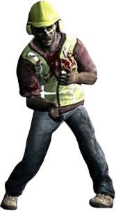
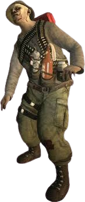

¿Que es la Gripe Verde?
La gripe verde tambien conocida como Green Fluu es un virus ficticio que desempeña un papel crucial
en la saga de videojuegos Left 4 Dead
Sintomas de la infeccion:
Factores de transmicion:
Via Aérea:
Se cree que la infección se propaga por el aire, similar a una gripe común. Esto podría ocurrir a través
de estornudos, saliva y otros fluidos corporales.
Por contacto:
Al haber contacto con un infectado como un golpe recibido por uno, es probable que se transmita, siendo
esta la razón por la cual los infectados golpean a los supervivientes intentando "contagiarlos".
¿Que son los "Carriers"?
De todos los infectados existentes, resalta uno que es diferente a todos. Este no tiene piel pálida
ni mutaciones en su apariencia física; sin embargo, es el más peligroso de toda la población
contagiada. También llamados carriers o incorrectamente inmunes, son personas que fueron infectadas
por el virus de la gripe verde y no sufrieron sus síntomas, por lo que a simple vista no se
diferencias de un paciente sano. Dado que los infectados atacan a civiles no contagiados y
portadores por igual, es difícil no confundirlos. Se sabe que, luego de que la CEDA fuese revelada
de la lucha contra el virus, los militares comenzaron a buscar portadores para estudiarlos y crear
una posible cura.
Posible razones de ataque
Los infectados, sin importar si son comúnes o especiales atacan a los Carriers y a personas no
infectadas por razones desconocidas. Se especula que puede ser porque no están infectados, y el
virus así los ataca. Sin embargo esta teoría se hecha abajo debido a que en algunas ocasiones se
pueden ver infectados peleando entre ellos en el mapa, incluso en raras ocasiones los infectados
especiales llegan matar a infectados comúnes.
También se especula que por el propio virus, los infectados comúnes y los infectados especiales
atacan a los Carriers y a los no infectados porque los ven como una amenaza.
INFECTADOS CARACTERISTICOS

Ignifugos:
Son agentes de la CEDA que fueron infectados con el virus mientras portaban los
trajes hazmat que (supuestamente) los iban a proteger contra la infección. Dichos trajes son a
prueba de fuego, haciendo inútil toda estrategia que use este elemento para aniquilarlos. Cuando
mueren, se puede escuchar como su traje se desinfla, además de que a veces sueltan un frasco con
bilis del Boomer, seguramente para llevarla a científicos e inventar una posible cura.
Son inmunes al fuego y no se envuelven en llamas cuando pasan por
el fuego.
La munición incendiaria no les afecta;
simplemente rebota contra ellos sin causar daño.

Antidisturbios:
Eran miembros de una firma privada de seguridad contratada por la CEDA para
mantener el orden en los centros de evacuación en Nueva Orleans, pero que también cayeron
víctimas de la infección. Llevan puesto cascos y una armadura antibalas que los protegen de
cualquier arma convencional en todas partes, a excepción de la espalda. Al morir pueden soltar
porras de policía.
Son inmunes a las balas y a los ataques frontales.
Son vulnerables a las motosierras y a las explosiones.
Jimmy Gibs JR:
Es un famoso piloto de carreras que se presentó en la ciudad de Savannah para dar
una exhibición de su coche y fue infectado durante el brote.
Es inmune al fuego y puede cegar a los
supervivientes con aceite de motor.
No le afectan las bombas de bilis ni las bombas caseras.
Aunque tiene mucha salud, puede morir
instantáneamente de un disparo a la cabeza o un ataque cuerpo a cuerpo.

Payaso:
Los payasos que trabajaban en el parque de atracciones Whispering Oaks se habían convertido en peculiares infectados. Usan unos enormes zapatos que emiten un ruido al caminar, lo que atrae a más infectados
Los payasos tienen maquillaje reflectante en la cara, lo que los hace fácilmente distinguibles.

Obrero de costrucción:
Son empleados de una compañía de construcción que también fueron
atacados por el virus. Llevan puesto unos cascos de construcción, un chaleco reflectante y
orejeras industriales.
Son inmunes a la atracción de las bombas caseras. A
diferencia de otros infectados, no se ven afectados por el sonido de las bombas caseras.
Tienen resistencia a ataques con armas romas.
Aunque sus cascos les impiden oír el pitido de las bombas
caseras, aún así reaccionan a los sonidos de la motosierra al perseguir al superviviente
que la lleve.

Superviviente Caído:
Fueron supervivientes que intentaron protegerse de la infección
preparándose bien, pero finalmente cayeron al no ser inmunes al virus. Su equipamiento balístico
los hace resistentes por tiempos cortos a la munición estándar, huyen cuando son atacados y
sueltan varios objetos útiles para el jugador tras morir.
Es inmune al fuego de las molotovs, a pesar de llevar una en su correa de municiones.
Posiblemente lleve un chaleco antibalas o una armadura bajo
su ropa, ya que su resistencia es increíble para ser un simple infectado.
Huirá apenas reciba el más mínimo daño.
Embarrado:
Son infectados que se parecen a los infectados comunes excepto que están cubiertos de
barro y lo usan como camuflaje. Corren a cuatro patas, aunque se tambalean sobre los pies cuando
los empujan. Además, se ponen erguidos cuando están ociosos. Su reptar rápido les permite correr
a más velocidad que los infectados comunes y el agua no les opone resistencia.
°El agua no les opone resistencia, lo que les permite moverse rápidamente incluso en zonas acuáticas.
°Pueden nublarte la vista con su barro al golpearte.